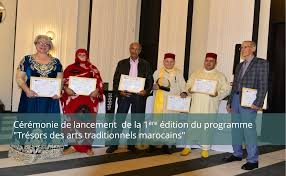

La reconnaissance internationale de l’artisanat marocain
De Paris à Tokyo, en passant par New York, l’artisanat marocain fascine et impressionne. Son authenticité, sa richesse culturelle et sa finesse d’exécution lui ont valu de nombreuses distinctions à l’échelle mondiale.
.png)
Le Maroc est régulièrement présent dans les salons internationaux d’artisanat, d’architecture et de design. Des pièces uniques réalisées par des artisans marocains sont exposées dans les musées et galeries les plus prestigieuses.
Quelques distinctions marquantes
1. Inscription à l’UNESCO
Plusieurs savoir-faire artisanaux marocains, comme la poterie de Safi ou la broderie de Fès, sont inscrits au patrimoine culturel immatériel de l’humanité par l’UNESCO.

2. Partenariats internationaux
Des collaborations avec des marques de luxe européennes et des écoles de design ont permis aux artisans marocains de faire connaître leur art à un nouveau public.
.png)
3. Récompenses artistiques
Des maîtres artisans ont été primés pour l’originalité de leurs créations lors d’événements internationaux comme la Biennale du Design de Londres ou le Salon du Patrimoine à Paris.
.png)
"L’artisanat marocain séduit par son authenticité et son âme. Il incarne une élégance intemporelle qui trouve naturellement sa place dans le design mondial."
Claire Durand, Curatrice à la Triennale de Milan
Un rayonnement durable
La reconnaissance internationale n’est pas un aboutissement, mais un tremplin. Elle encourage la transmission du patrimoine, la montée en gamme des produits et le renforcement de l’identité culturelle du Maroc.
Grâce à l’engagement des artisans, des institutions et des passionnés, le Maroc continue de rayonner à travers son artisanat.